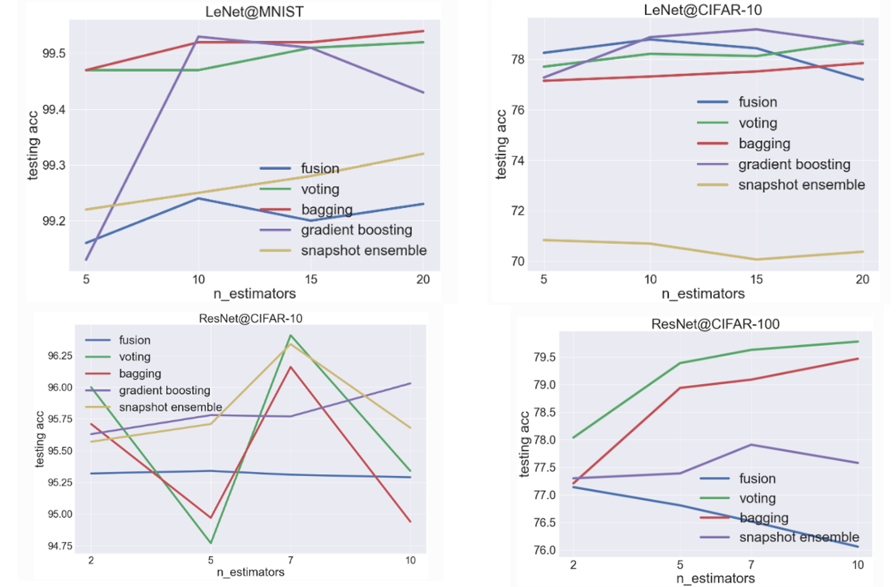
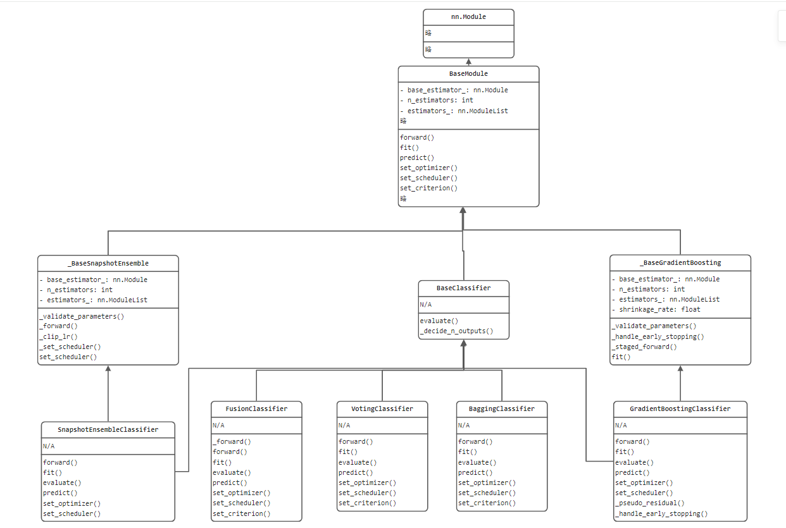
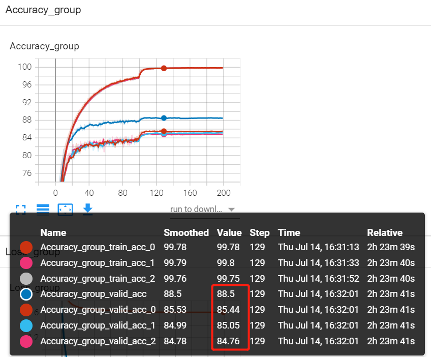

7.7 TorchEnsemble 模型集成库
俗话说，三个臭皮匠顶个诸葛亮，机器学习模型亦是如此。Model Ensemble（模型集成）是机器学习领域重要的研究方向，在传统机器学习以及各种数据科学竞赛中，Model Ensemble成了标配， 因此，本节就介绍工业生产中实用的模型集成技术。
pytorch的生态系统中已经有ensemble的库，本节将介绍torchensemble的使用，各种集成方法的逻辑，torchensemble的代码结构以及如何改造自己的代码。
ensemble-pytorch 简介
TorchEnsemble是pytorch生态的一员，提供了统一的集成模块供pytorch使用。目前支持的方法有
| Fusion | Mixed | fusion.py | Classification / Regression |
|---|---|---|---|
| Voting[1] | Parallel | voting.py | Classification / Regression |
| Neural Forest | Parallel | voting.py | Classification / Regression |
| Bagging[2] | Parallel | bagging.py | Classification / Regression |
| Gradient Boosting[3] | Sequential | gradient_boosting.py | Classification / Regression |
| Snapshot Ensemble[4] | Sequential | snapshot_ensemble.py | Classification / Regression |
| Adversarial Training[5] | Parallel | adversarial_training.py | Classification / Regression |
| Fast Geometric Ensemble[6] | Sequential | fast_geometric.py | Classification / Regression |
| Soft Gradient Boosting[7] | Parallel | soft_gradient_boosting.py | Classification / Regression |
各方法的理论简介可查阅文档
（关于模型集成的理论概念，请自行通过机器学习基础了解）
原理分析介绍
torchensemble提供了训练示例,本节对示例进行了整理及注释，可参见配套代码。
通过代码段可知道，torchensemble提供了集成类，集成类中的基学习器都是同一个结构（如LeNet-5），然后通过集成类的fit()函数完成训练，通过evaluate()来评估。
本部分最核心的问题在于理解不同的集成方法，它是如何使用多个基学习器的输出结果，下面通过源代码中的forward函数观察不同方法的集成方式。
fusion
原理：先平均，后概率。
通过FusionClassifier类的 forward函数可看到，它是对基学习器的输出进行逐元素的平均，然后再进行softmax进行输出分类概率向量。
class FusionClassifier(BaseClassifier):
def _forward(self, *x):
"""
Implementation on the internal data forwarding in FusionClassifier.
"""
# Average
outputs = [estimator(*x) for estimator in self.estimators_]
output = op.average(outputs)
return output
@torchensemble_model_doc(
"""Implementation on the data forwarding in FusionClassifier.""",
"classifier_forward",
)
def forward(self, *x):
output = self._forward(*x)
proba = F.softmax(output, dim=1)
return proba
voting
voting：先概率，后平均。
voting先对基学习器进行softmax，然后把多个概率向量进行平均。
关于投票法，在sklearn中还有多种选择，vote模式有soft与hard，在torchensemble采用的是soft方式，及返回的是各分类器分类概率的平均。
If voting='soft' and flatten_transform=True:
returns ndarray of shape (n_samples, n_classifiers * n_classes), being class probabilities calculated by each classifier.
If voting='soft' and `flatten_transform=False:
ndarray of shape (n_classifiers, n_samples, n_classes)
If voting='hard':
ndarray of shape (n_samples, n_classifiers), being class labels predicted by each classifier.
class VotingClassifier(BaseClassifier):
@torchensemble_model_doc(
"""Implementation on the data forwarding in VotingClassifier.""",
"classifier_forward",
)
def forward(self, *x):
# Average over class distributions from all base estimators.
outputs = [
F.softmax(estimator(*x), dim=1) for estimator in self.estimators_
]
proba = op.average(outputs)
return proba
bagging
bagging：先概率，后平均。这与voting一样。
bagging的主要原理在于基模型的训练数据不一样，因此可得到不同的基模型，而torchensemble文档里提到，深度学习中数据越多，模型越好，因此就没有采用K-Flod的方法划分数据了。
"bagging further uses sampling with replacement on each batch of data. Notice that sub-sampling is not typically used when training neural networks, because the neural networks typically achieve better performance with more training data."
class BaggingClassifier(BaseClassifier):
@torchensemble_model_doc(
"""Implementation on the data forwarding in BaggingClassifier.""",
"classifier_forward",
)
def forward(self, *x):
# Average over class distributions from all base estimators.
outputs = [F.softmax(estimator(*x), dim=1) for estimator in self.estimators_]
proba = op.average(outputs)
return proba
GradientBoostingClassifier
GradientBoostingClassifier：先求和，再概率。
这里先求和是因为Gradient Boosting算法原理就是“加法模型”，最终的结果是利用N个学习器的结果之和得到。为什么呢？因为第二个学习器学习的是第一个学习器与目标检测的差距，第三个学习器学习的是第一个+第二个学习器结果之和与结果之间的差距，以此类推。因此才有了sum_with_multiplicative这个函数中的代码逻辑。
如果不了解集成学习的基础概念，是无法理解上面这段话的，因为上面这段话是对梯度提升（GradientBoosting）算法的简述，而梯度提升（GradientBoosting）算法相对于bagging方法而言，不是那么容易理解，还请自行补足机器学习基础概念。
def forward(self, *x):
output = [estimator(*x) for estimator in self.estimators_]
output = op.sum_with_multiplicative(output, self.shrinkage_rate)
proba = F.softmax(output, dim=1)
return proba
def sum_with_multiplicative(outputs, factor):
"""
Compuate the summation on a list of tensors, and the result is multiplied
by a multiplicative factor.
"""
return factor * sum(outputs)
SnapshotEnsembleClassifier
SnapshotEnsembleClassifier：先平均，后概率。
SnapshotEnsembleClassifier是深度学习模型提出后才发明的集成方法，这与深度学习模型训练过程有关。其思路是保存多个局部最后的模型，然后将它们的结果进行集成输出。
这个思路非常新奇，集成学习的核心点之一是如何寻找多个基学习器，通常方法是从数据、参数、模型类型出发，获得多个性能不同的基学习器。而SnapShotEnsemble是通过一次训练过程中，保存多个局部最优的状态为基学习器，这样做的好处是高效，且各基学习器的错误样本通常不会重复，因此模型是基于上一次错误样本进行训练的。
[Huang Gao, Sharon Yixuan Li, Geoff Pleisset, et al., “Snapshot Ensembles: Train 1, Get M for Free.” ICLR, 2017.]
def _forward(self, *x):
"""
Implementation on the internal data forwarding in snapshot ensemble.
"""
# Average
results = [estimator(*x) for estimator in self.estimators_]
output = op.average(results)
return output Average
results = [estimator(*x) for estimator in self.estimators_]
output = op.average(results)
更多方法请关注官方文档的介绍。
官方demo提供了一些对比实验，这里进行汇总，供参考

代码结构
torchensemble库将模型训练、推理、集成过程都进行了高度封装，并且提供统一的接口，如何将复杂的、多种多样的模型编写为统一的API接口？
这里就绘制简略版的UML类图，梳理代码结构。

通过类图，可以看到所有的继承类都是nn.Module类，由此可见第四章的nn.Module有多重要。
从代码结构可以学习了解到，一个复杂的模块都可以提炼、抽象出最基础的BaseClass，BaseClass中定义最核心的、最通用的属性和方法，如这里的基学习器、基学习器数量、学习器容器，forward(), fit(), predict()等。
手动实现模型集成
虽然torchensemble提供了丰富的集成方法，但是有的时候并不适用于手动训练的多个模型，下面记录两个手动实现模型集成（投票法）的代码方案。
一、借助nn.ModuleList()
class Ensemble(nn.Module):
def __init__(self, device):
super(Ensemble,self).__init__()
# you should use nn.ModuleList. Optimizer doesn't detect python list as parameters
self.models = nn.ModuleList(models)
def forward(self, x):
# it is super simple. just forward num_ models and concat it.
output = torch.zeros([x.size(0), len(training.classes)]).to(device)
for model in self.models:
output += model(x)
return output
二、借助list，并Counter
for img, label in tqdm(testloader):
img, label = img.to(device), label.to(device)
for i, mlp in enumerate(mlps):
mlp.eval()
out = mlp(img)
_, prediction = torch.max(out, 1) # 按行取最大值
pre_num = prediction.cpu().numpy()
mlps_correct[i] += (pre_num == label.cpu().numpy()).sum()
pre.append(pre_num)
arr = np.array(pre)
pre.clear()
result = [Counter(arr[:, i]).most_common(1)[0][0] for i in range(BATCHSIZE)]
vote_correct += (result == label.cpu().numpy()).sum()
print("epoch:" + str(ep) + "集成模型的正确率" + str(vote_correct / valid_data_size))
原文链接：https://blog.csdn.net/weixin_42237113/article/details/108970920
ResNet在Cifar-10上的实验效果
为了观察模型融合的效果，特地编写了代码，实现ResNet在Cifar10上的训练，并对每个基学习器的性能进行对比，直观的看出模型集成的作用是立竿见影的，请看效果图。

本实验采用3个学习器进行投票式集成，因此绘制了7条曲线，其中各学习器在训练和验证各有2条曲线，集成模型的结果通过 valid_acc输出（蓝色），通过上图可发现，集成模型与三个基学习器相比，分类准确率都能提高3个多百分点左右，是非常高的提升了。
为了能绘制出这幅图，特地构思了代码，代码主要是自定义了class MyEnsemble(VotingClassifier)，并重写fit函数，使得训练过程的信息可以被记录下来。
小结
本节简单介绍了pytorch中使用模型集成的方法库——torchensemble，详细内容还请查看官方文档，同时可以关注kaggle的方案，集成学习是竞赛的必备方案，也是工业项目中常用的方法，请重点学习。